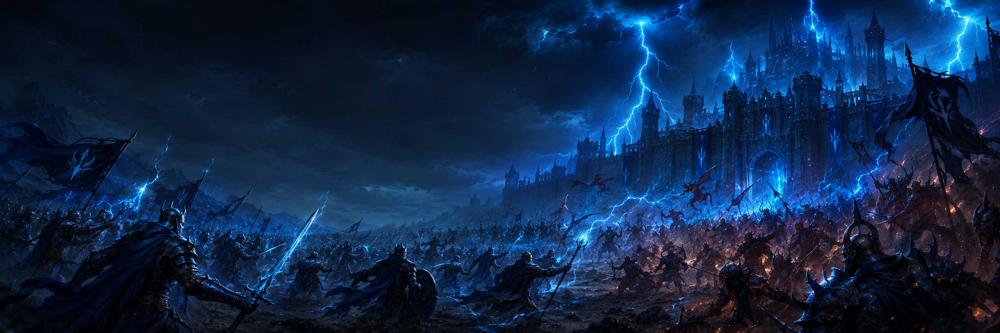
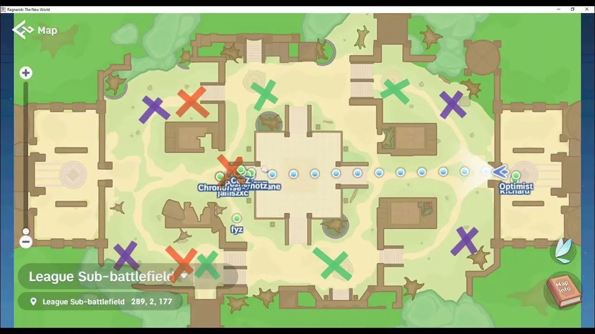

Mineral Respawn Area
Secure these areas when repair-material mobs respawn. Do not let the enemy collect ore freely.

STRATEGY - SUB LEAGUE
Use this Sub League board for clean grouping, safe rotations, target focus, and tower timing. Stay close to the commander call and avoid solo pushes.
SUB LEAGUE STRATEGY
We need the Sub League resources to strengthen and support our Main League parties. The goal is to control repair materials, secure MVP timing, and block enemy movement before they can support their own Main League.

Secure these areas when repair-material mobs respawn. Do not let the enemy collect ore freely.
Move here 1 minute before MVP respawn. Kill the MVP quickly, then return to resource control.
Hold around this area to block enemy paths toward the MVP or toward our position.
SUB LEAGUE RULES
This is not just about who can deal the most damage. Do not go off alone or try to be the hero. We will not win if everyone only focuses on fighting enemies.
If we want better rewards every Guild League, follow the strategy, stay with your team, and complete your assigned role.